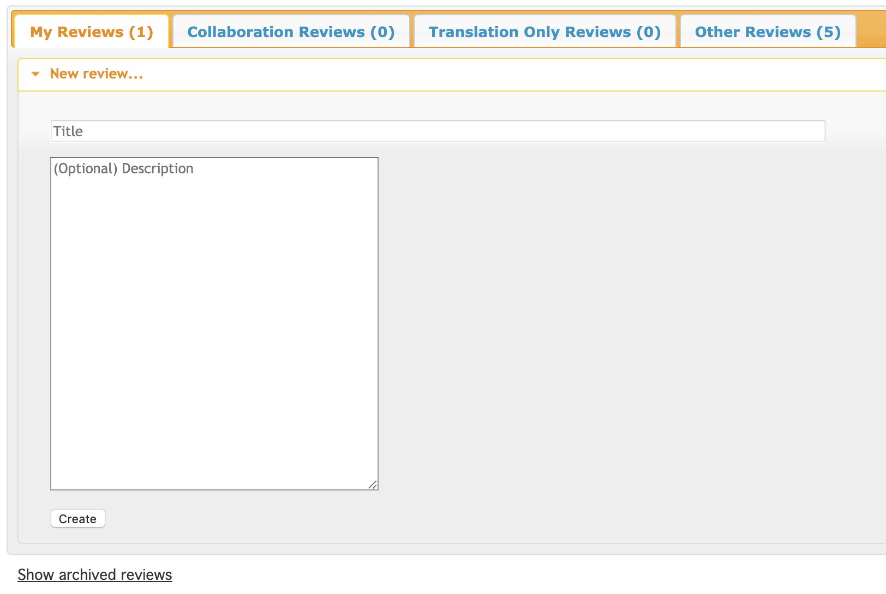
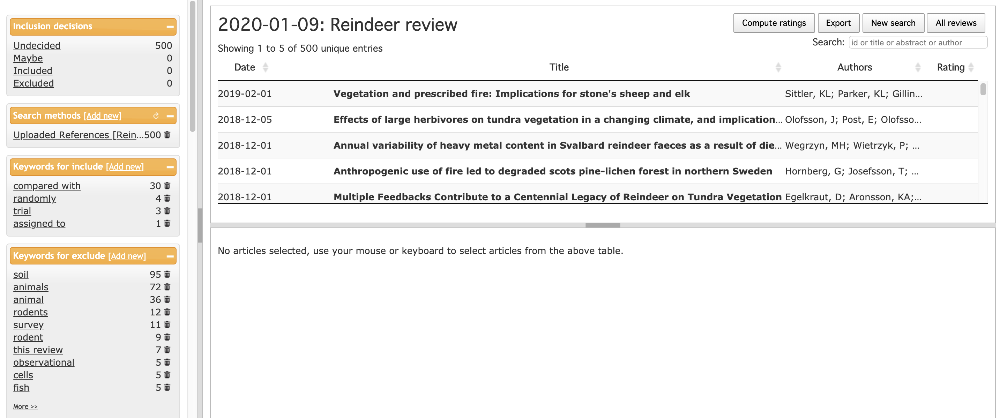
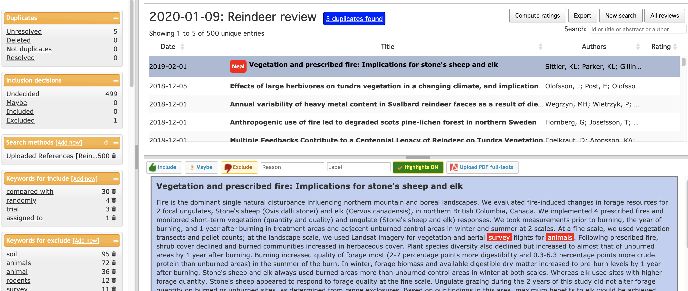
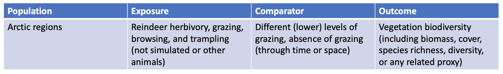

7. Screening for relevance
In this session, the process by which potentially relevant search results can be assessed (screened) for relevance against established, well-defined inclusion criteria will be detailed. The key stages of screening will be introduced: title screening, abstract screening, retrieval of full text documents, full text screening. Practical advice will be given regarding efficient ways to screen large volumes of evidence. The session will also discuss the importance of ‘double screening’ and assessing consistency between reviewers in the application of the inclusion criteria. In a practical exercise attendees will screen abstracts using the review management software Rayyan.
Learning objectives:
- To appreciate the importance of carefully planned screening for evidence relevance against a priori inclusion criteria
- To understand how screening is performed
- To appreciate ways in which screening and full text retrieval can be undertaken efficiently
- To understand the importance of and how to undertake consistency checking
- To gain practical experience of using the free systematic review management software Rayyan for screening
To begin, watch the following presentation:
You can find the lecture handouts here.
Next, read the following article along with the sixth chapter of the guidance from the Collaboration for Environmental Evidence here.
We'll revisit sections of the CEE Guidance throughout the course. It focuses on environmental and conservation topics, but is subject agnostic, meaning that it's useful for other disciplines, too. Feel free to focus instead on the Cochrane Guidance if you work with healthcare topics.
Practical exercise
In this practical exercise, you will get experience screening article for relevance based on their titles and abstracts for a real review on the impacts of reindeer grazing on Arctic vegetation. Follow the instructions below.
- Sign up for an account with Rayyan - Follow this link and click 'Sign up' to get an account with Rayyan, a free systematic review management tool.
- Set up a new review for your project - Click 'New review' and give it a title and brief description. 
- Upload deduplicated reference library - Save the deduplicated search results from this link and upload them. You should end up with 500 records in your project. 
- Begin screening titles and abstracts (together) - Click on the first record in the top right pane. You will then see the record's abstract and have the opportunity to code it as include or exclude (or maybe if you want a second opinion. 
*** Note that Rayyan uses a different way to identify duplicates to EndNote Online - it finds a further 5 potential duplicates. You can read more about managing duplicates in Rayyan here. ***
Now read the titles and abstracts of as many records as you can in 45 minutes or so. Use the following inclusion criteria:
If you want to learn more about useful functionality within Rayyan, read this article by the software development team or check out the help forum here.
So now you have an idea of how screening is carried out. In practice, your team would arrange an initial exercise to practice screening amongst the team, test how well the criteria can be operationalised, potentially refine and expand on criteria that aren't clear enough, and be in constant contact (at least to start with) concerning any queries the team members have about particular cases that are doubtful. After you have screened and obtained all relevant articles at the full text level, the next step is to begin extracting data and coding studies.
Move to the next module!